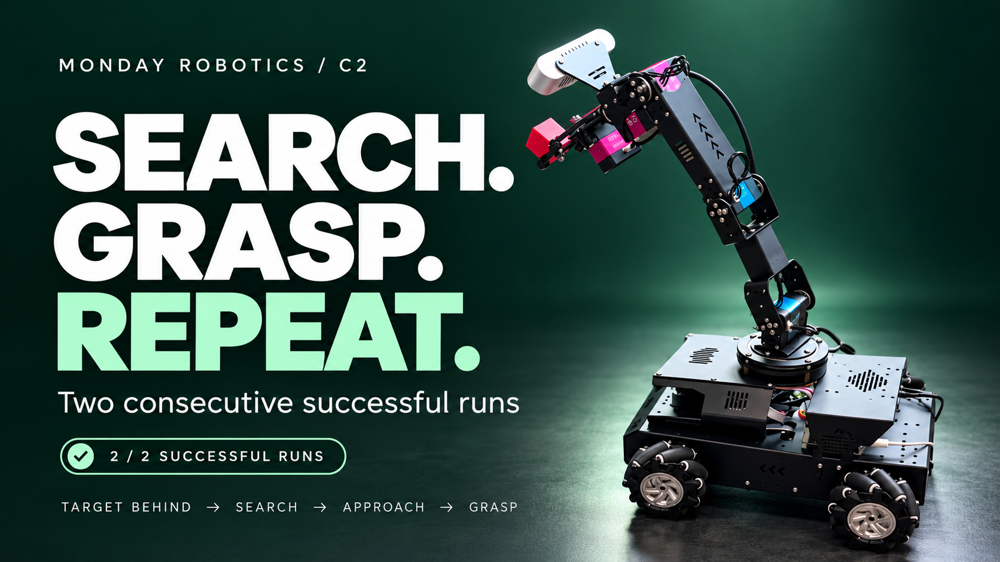
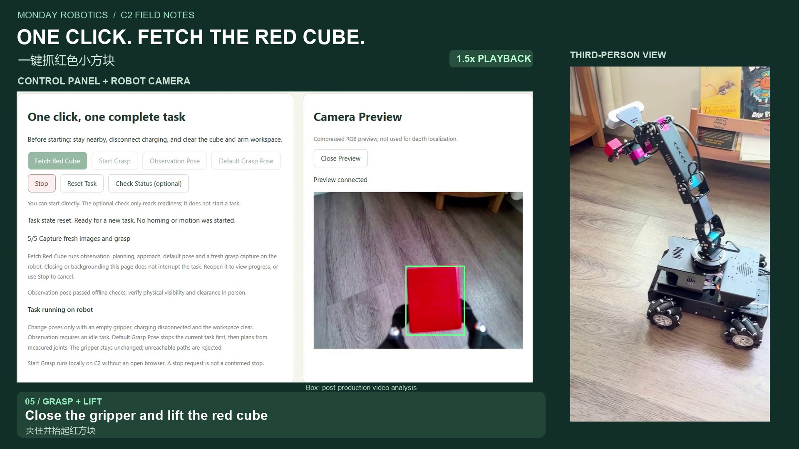
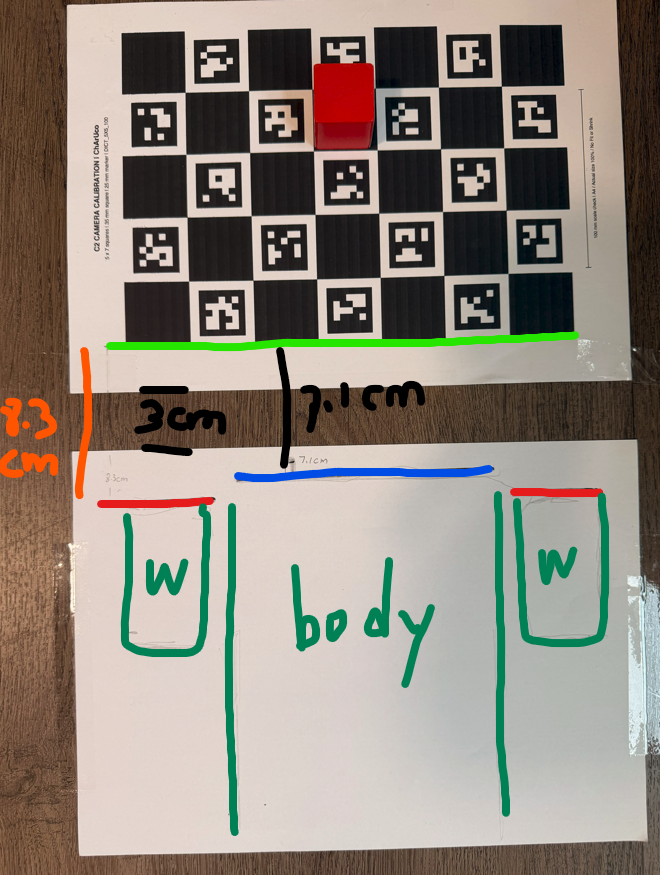
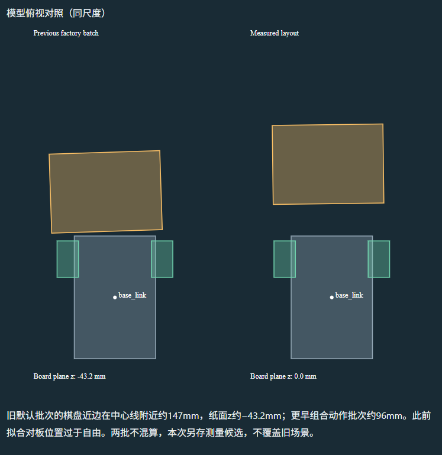
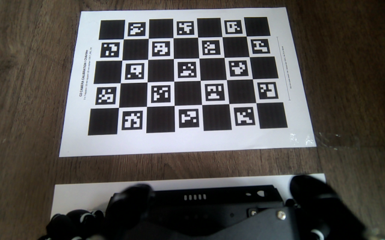
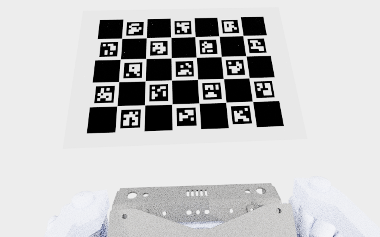
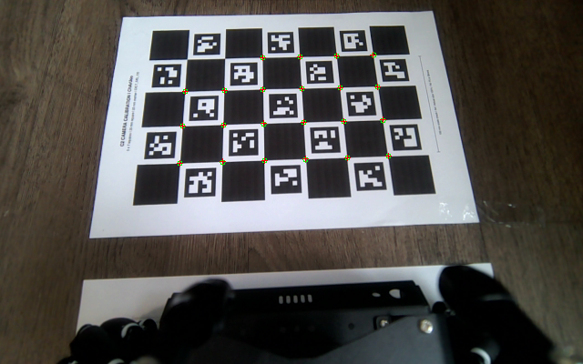
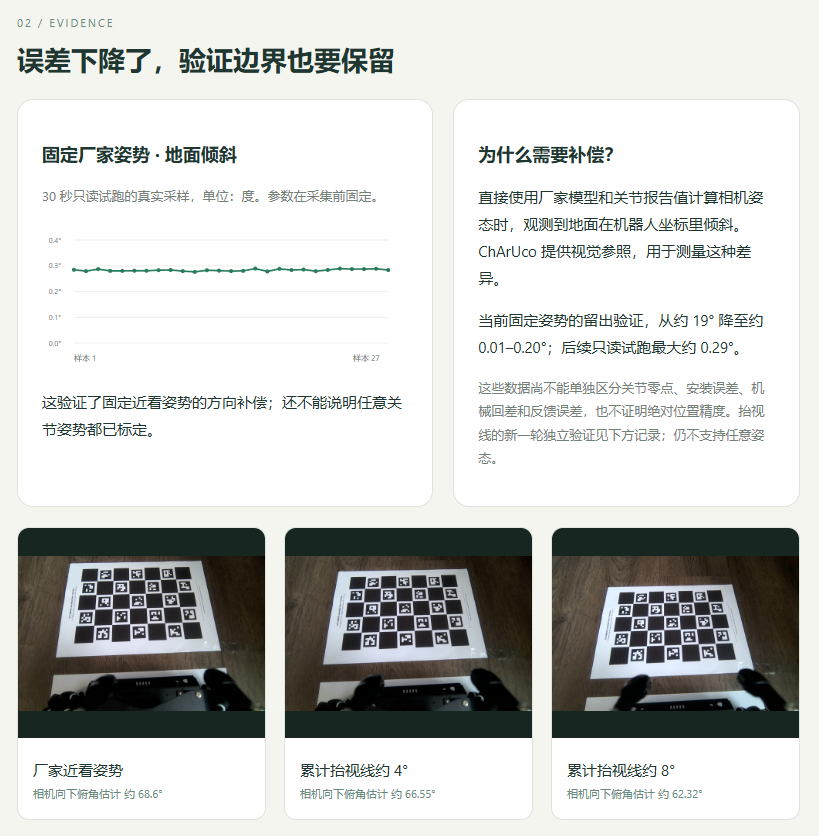
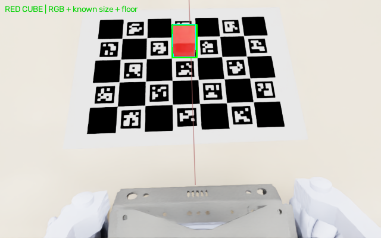

Search. Grasp. Repeat.
From color segmentation to YOLOE, then two consecutive search-and-grasp runs—including a cube placed behind the robot.
Watch the two-run demonstration →05 / SIM-TO-REAL
From simulation alignment and real-world grasps to a one-click mobile task: firmware repairs, performance improvements and an integrated workflow.

From color segmentation to YOLOE, then two consecutive search-and-grasp runs—including a cube placed behind the robot.
Watch the two-run demonstration →
From five manual steps to one click: observe, plan, approach, restore the arm pose, then reacquire and grasp. A real-robot run shown through the control panel and a synchronized phone recording.
Watch the two-view demonstration →Three robot-side timings: 6.71, 6.25 and 6.43 seconds. Reuse computation, simplify small-contour distance evaluation, and retain full collision checks.
Read the devlog →Repeatable real-world grasps at multiple positions, with the click-to-motion wait reduced from about 50 to 13 seconds: lessons in firmware, architecture and AI-assisted development.
Read the full review →When the camera, robot and paper positions are all uncertain, an image fit can improve while the inferred 3D layout remains implausible. I measured the distances with a ruler and drew the chassis and two front-wheel outlines on a photograph. This supplied layout constraints independent of the camera fit.

Combining these measurements with the model put the near pattern edge about 207.5 mm along the robot centerline. Hand-drawn outlines helped estimate lateral placement and yaw, but were not treated as precise physical dimensions. These are measured ground-truth constraints, not a complete error-free six-degree-of-freedom survey.

With measured layout, recorded default joints and camera intrinsics fixed, the paper no longer moved to improve the fit. Only the camera mount position and orientation changed; the full gripper remained visible. The fitted optical center shifted about 10.9 mm from nominal, with a total orientation change of about 20.1°.



This resolved the main alignment issue for this default reference, not for every joint pose. With the camera frozen, other poses still differed. Outbound and returning captures at the same reported 4° differed by about 19.1 pixels in their real corners. Model errors, feedback semantics and direction-dependent mechanics remain possible contributors. A few repeatable working poses are the practical next step.
Following commands and numbers in a chat became difficult during repeated tests. I built a C2 web workbench with Codex to bring experiment records, result analysis, pose plans, notes and data export together, making it easier to revisit what happened at each step.
A particularly useful addition was a battery readout in the browser. Previously I kept opening the phone app to check whether the robot was running out of power. The workbench now shows the reported estimate, update time and connection status, reducing those interruptions while the connection is healthy.
The tool makes data freshness visible as well as the values themselves: old readings remain available for reference without masquerading as live state. Image comparisons also retain green circles, red crosses and displacement lines, with clear labels for the two observations.

This checks orientation correction and short-term stability at a fixed near-view pose, not millimeter positioning accuracy or calibration of arbitrary joint poses. The page keeps the improvement and its validation boundary together so a local success is not mistaken for workspace-wide accuracy.
We did not attribute every discrepancy to the physical robot. Differences between rendering and photographs may come from the camera mount, joint axes or zeros, link dimensions, gripper geometry or execution. Differences between two real images at the same reported angles also require considering motion direction, feedback semantics, compliance or changes in the setup. The available evidence does not fully separate those causes.
We therefore chose a practical compromise: instead of perfect sim/real overlap at arbitrary poses, aim for adequate localization and repeatable motion within the limited pose range needed to search, approach and grasp. This narrows the validation problem; it does not claim that the errors disappeared.
The third stage is generally a small family of poses, not one fixed joint-angle combination. Selecting a base parking position can bring targets into a bounded grasp region. Because camera and gripper move together, changing the view may also move the fingers; near-target occlusion must be checked. Visibility, reachability and a clear descent must hold together.
Prefer consistent working poses and approach directions, with stops for renewed localization at key points. Live visual correction remains future work. The eventual criterion is reliable finding, alignment and grasping, rather than perfect overlap in every rendered frame. Default alignment has supporting results and two simplified simulated grasps passed; the search pose, above-target pose family, continuous visual correction and complete real-robot grasp workflow still require separate validation. This is the agreed experimental direction, not a claim that the full workflow is already validated.
A 3 cm red cube was placed at the photographed cell: center column, one row farther from the robot than the center cell. Starting from default, this baseline explicitly used scene target coordinates to test the path and simplified contact physics. The tested vertical-hover path did not meet the planning tolerance in place; advancing the base 8 cm made it reachable. The board and cube did not move.
Approach → hover for six seconds → descend → close → lift and hold for six seconds → release. The cube center stayed about 12.11 cm high, a lift of roughly 10.6 cm, then fell after release. It was not attached to the gripper.
The detector and planner received no cube ground-truth coordinates. Red contour segmentation in the initial RGB image, calibrated camera geometry, known 3 cm size and a horizontal floor prior produced a 3D center estimate. No board-cell location or depth image was used. Ground truth was reserved for scene setup, physical scoring and post-run comparison.

Only after planning, comparison with ground truth showed about 0.53 mm center error in this run. A blank image stopped localization; shifting the image 20 pixels changed the lateral estimate by about 15.6 mm, rather than returning a stored coordinate. A new path from the visual estimate successfully lifted and held the cube at about 12.24 cm center height, then released it onto the floor.
Limits: both experiments were offline simulation; the real robot remained charging. The arm used ideal kinematic actuation with a dynamic cube. Real torque, backlash, wheel dynamics and full-path self-collision were not validated. Vision localized once before trajectory execution, rather than continuously servoing. The 0.53 mm result belongs to this ideal scene, not real-robot accuracy. Green boxes come from actual per-frame red detection. Both views replay the same recorded physics states: 58 seconds, 1×, 5 fps.
Alignment statistics · Experiment 1 results · Experiment 2 results · Post-run visual localization evaluation